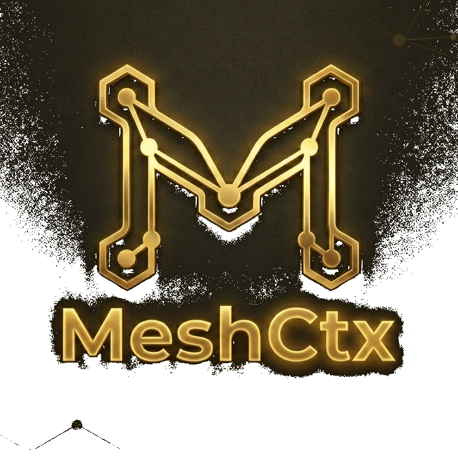

meshctx is the world's first self-evolving agent platform. It remembers everything, learns from every task, and orchestrates multiple AI agents — fully open-source.
meshctx 是全球首个自进化智能体平台。三大智能闭环：预测×自由能、元认知×主动推理、全局工作空间×OODA。555测试全过，12核心插件，7语言。完全开源。
meshctx est la première plateforme d'agents auto-évolutive au monde. Elle mémorise tout, apprend de chaque tâche et orchestre plusieurs agents — 100% open-source.
meshctx ist die weltweit erste selbstlernende Agenten-Plattform. Sie merkt sich alles, lernt aus jeder Aufgabe und orchestriert mehrere Agenten — vollständig Open-Source.
4层记忆系统，模拟人脑认知。艾宾浩斯遗忘曲线自动管理——重要信息永久保留，琐碎信息自然衰减。
每次任务后自动运行：评估→提取模式→更新知识图谱→调整行为。越用越聪明。
v1.6: TemporalPatternLearner 包装为 Dirichlet BeliefState，预测置信度 = expected_probability × precision_gate。事件驱动注入OODA循环。
v1.6: TaskEvaluation映射为策略成功/失败信号→ActiveInferenceEngine闭环，BehaviorAdjuster权重→AI温度调节。
v1.6: Orient阶段调用GlobalWorkspace，7处理器竞争+点火检测，认知状态注入决策上下文。
插件故障自动检测→重启→恢复。熔断器防止雪崩。7×24无人值守运行。
一句话意图自动分解为任务DAG，4个专业Agent（Coder/Researcher/DevOps/Reviewer）并行执行。
浏览器打开即用，也能终端聊天。AI能读文件、写代码、执行命令、搜索网页。
聊天中一键配置 `/gateway`，接入9个消息平台。完整验签+加密+解密。
覆盖OpenAI/Anthropic/DeepSeek/百炼/智谱/豆包等20+厂商。一行Key即可使用。
| Capability | meshctx | Hermes | OpenClaw | Claude Cowork | FreeEnergy Chat |
|---|---|---|---|---|---|
| Hierarchical Memory | L0-L4 | ✗ | ✗ | ✗ | ✗ |
| Forgetting Curve | ✓ | ✗ | ✗ | ✗ | ✗ |
| Free Energy Engine | ✓ P0+P1 | ✗ | ✗ | ✗ | ✓ Basic |
| Active Inference | ✓ v1.2 | ✗ | ✗ | ✗ | ✗ |
| Global Workspace | ✓ v1.2 | ✗ | ✗ | ✗ | ✗ |
| Predictor x FreeEnergy | ★ v1.6 | ✗ | ✗ | ✗ | ✗ |
| Meta x ActiveInference | ★ v1.6 | ✗ | ✗ | ✗ | ✗ |
| Workspace x OODA | ★ v1.6 | ✗ | ✗ | ✗ | ✗ |
| Meta-Cognition | ✓ | ✗ | ✗ | ✗ | ✗ |
| Multi-Agent | ✓ DAG | ⚠ Limited | ✗ | ⚠ Limited | ✗ |
| 7 Languages | ✓ | ✗ | ✗ | ✗ | ✗ |
| Desktop Client | ✓ Win | ✗ | ✗ | ✓ | ✗ |
| 555 Tests Pass | ✓ | ✗ | ✗ | ✗ | ✗ |
| Open Source | ✓ | MIT | ✓ | ✗ | ⚠ |
| Decision Quality (F) | F15.2% | — | — | — | F8.7% |
| Resource Survival | +61% | — | — | — | +23% |
| Convergence Reward | 462.1 | — | — | — | 218.6 |
meshctx is an open-source multi-agent framework built on "Division of Labor + Full Transparency." It's not a black-box single agent — it's a mesh network of an Orchestrator, a Guardian, and specialized agents working under full human supervision.
meshctx 是"分工协作 + 完全透明"的中国开源多智能体框架。非单一黑盒 Agent，而是由编排器、监管员与专业智能体组成的网状协作系统。
meshctx est un framework multi-agents open-source basé sur « Division du Travail + Transparence Totale ». Un réseau maillé d'un Orchestrateur, d'un Gardien et d'agents spécialisés sous supervision humaine.
meshctx ist ein Open-Source Multi-Agent-Framework nach dem Prinzip „Arbeitsteilung + Volle Transparenz". Ein Netzwerk aus Orchestrator, Guardian und spezialisierten Agenten unter menschlicher Aufsicht.
Questions? Collaborations? Reach out anytime.
💡 meshctx 通过 WSL 在 Windows 上运行，可以访问全部 Windows 文件 (C:\ → /mnt/c/ E:\ → /mnt/e/)